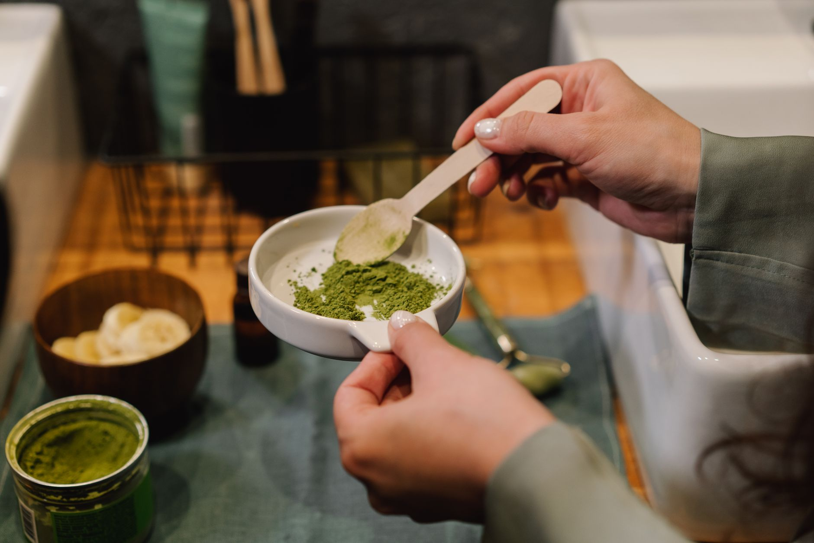

Inicio/Artículos/Suplementos · Piel y articulaciones
Colágeno hidrolizado: qué es y qué dice la evidencia sobre piel y articulaciones
8 min de lectura · Actualizado 4 de septiembre de 2026 · Por Miguel Lopez

El colágeno hidrolizado (en polvo, en cápsulas, en "bebidas de belleza") es uno de los suplementos más promocionados en redes sociales, con promesas de piel más firme, menos arrugas y articulaciones más sanas. Este artículo explica qué es realmente, qué encontró la investigación disponible sobre piel, pelo, uñas y articulaciones, y dónde esa evidencia todavía es limitada.
Qué es el colágeno hidrolizado
El colágeno es la proteína más abundante del cuerpo humano, presente en la piel, los tendones, los cartílagos y los huesos. El colágeno hidrolizado, también llamado "péptidos de colágeno", es colágeno de origen animal (generalmente bovino, porcino o marino) fragmentado mediante procesos industriales para facilitar su absorción por vía oral.
El cuerpo no absorbe el colágeno entero tal cual: durante la digestión se descompone en aminoácidos y péptidos más pequeños, igual que cualquier otra proteína, y no hay garantía de que esos fragmentos viajen específicamente hasta la piel, el pelo o las articulaciones.
Qué dice la evidencia sobre la piel
Una revisión de 19 estudios documentó mejoras en firmeza, elasticidad e hidratación cutánea en personas que consumían colágeno frente a grupos control. Sin embargo, muchos de los productos evaluados combinaban colágeno con vitamina C, ácido hialurónico y antioxidantes, lo que dificulta atribuir el efecto al colágeno de forma exclusiva. Algunos ensayos controlados con péptidos específicos (prolil-hidroxiprolina e hidroxiprolil-glicina) mostraron avances en hidratación y arrugas, aunque todavía faltan investigaciones amplias e independientes que sean concluyentes.
Qué dice sobre el pelo y las uñas
Según Harvard Health, apenas hay evidencia que respalde el uso de colágeno para mejorar el pelo y las uñas. Existe un único estudio pequeño (25 participantes) que usó 2,5 g diarios durante 24 semanas y mostró mejoras en uñas quebradizas, pero sin grupo control, lo que limita su confiabilidad. Sobre el cabello, directamente no hay estudios en humanos disponibles.
¿Y para las articulaciones?
Este es el uso con mayor tradición de investigación, particularmente en deportistas y en personas con dolor articular relacionado con la edad. Algunos estudios en personas con osteoartritis o dolor articular asociado al ejercicio muestran una reducción modesta del dolor con el uso continuado de colágeno. Aun así, la calidad y el tamaño de estas investigaciones varía considerablemente, y no todos los ensayos muestran diferencias claras frente a placebo.
Lo que muestran los estudios sobre las dosis usadas en investigación
Vale aclarar que esto describe lo que se ha investigado, no una recomendación de uso. Los estudios disponibles emplearon dosis muy variadas, desde 2,5 g hasta 15 g diarios, según el objetivo evaluado (piel, uñas o articulaciones), y no existe un consenso científico sobre cuál sería la dosis óptima ni una cifra oficial establecida. Esa dispersión en las dosis usadas es, en sí misma, una de las razones por las que la evidencia todavía se considera mixta.
Seguridad
La evidencia disponible describe al colágeno hidrolizado como generalmente bien tolerado en personas sanas. Se han señalado algunas situaciones, como la gota o la necesidad de restringir proteína por enfermedad renal, en las que su uso requiere evaluación médica particular, algo que corresponde discutir con un profesional de salud y no resolver por cuenta propia.
Nuestra conclusión
El colágeno hidrolizado no es una estafa total, pero tampoco es la solución milagrosa que sugiere buena parte de su promoción comercial: la evidencia sobre la piel es moderada y mixta, sobre articulaciones es prometedora pero desigual, y sobre pelo y uñas es prácticamente inexistente. Los propios expertos que revisan esta evidencia señalan que la protección solar diaria y los retinoides tópicos tienen un respaldo científico mucho más sólido para la salud de la piel que cualquier suplemento oral.
- ¿Qué es el colágeno hidrolizado?
- Colágeno de origen animal (bovino, porcino o marino) fragmentado industrialmente en péptidos más pequeños para facilitar su absorción oral. El cuerpo lo descompone igual que cualquier otra proteína durante la digestión.
- ¿Qué dosis han usado los estudios sobre colágeno?
- Los estudios disponibles utilizaron dosis muy variadas, desde 2,5 g hasta 15 g al día según el objetivo evaluado; el pequeño estudio sobre uñas quebradizas usó 2,5 g diarios durante 24 semanas. No existe una dosis oficial ni un consenso científico sobre cuál sería la óptima.
- ¿El colágeno hidrolizado sirve para las arrugas?
- La evidencia es limitada y mixta: una revisión de 19 estudios mostró mejoras en firmeza y humedad de la piel, pero muchos productos combinan colágeno con otros ingredientes, lo que dificulta saber qué causa el efecto. Faltan ensayos grandes e independientes.
- ¿Sirve para el pelo y las uñas?
- La evidencia es aún más escasa. Solo hay un pequeño estudio sin grupo de control sobre uñas quebradizas, y ningún estudio en humanos sobre el pelo.
- ¿El colágeno hidrolizado es seguro?
- La evidencia lo describe como generalmente bien tolerado en personas sanas. Existen situaciones particulares, como gota o restricción proteica por enfermedad renal, en las que su uso amerita evaluación médica previa.
- ¿Qué tiene más respaldo científico para la piel, el colágeno o el protector solar?
- Según los propios expertos que revisan la evidencia, la protección solar diaria y los retinoides tópicos tienen un respaldo científico mucho más sólido para la salud de la piel que los suplementos de colágeno.
- ¿En cuánto tiempo se observan resultados en los estudios sobre colágeno y piel?
- Los estudios que muestran mejoras en la piel suelen medir resultados tras periodos de 8 a 12 semanas de uso continuado; no es un efecto que aparezca de un día para otro.
- ¿Existe el colágeno vegano y tiene la misma evidencia?
- No existe colágeno vegetal como tal, ya que el colágeno es una proteína de origen animal. Los productos comercializados como "veganos" suelen contener ingredientes que teóricamente estimulan la producción propia de colágeno, pero no son colágeno hidrolizado y cuentan con mucha menos evidencia directa.
Preguntas frecuentes
Fuentes
Enlaces a la fuente original, para que puedas comprobarlo por tu cuenta.
Miguel Lopez
Periodista independiente, no profesional sanitario. Escribe sobre tendencias de salud y fitness citando siempre las fuentes primarias, para que puedas comprobarlo por tu cuenta. Más sobre el sitio.